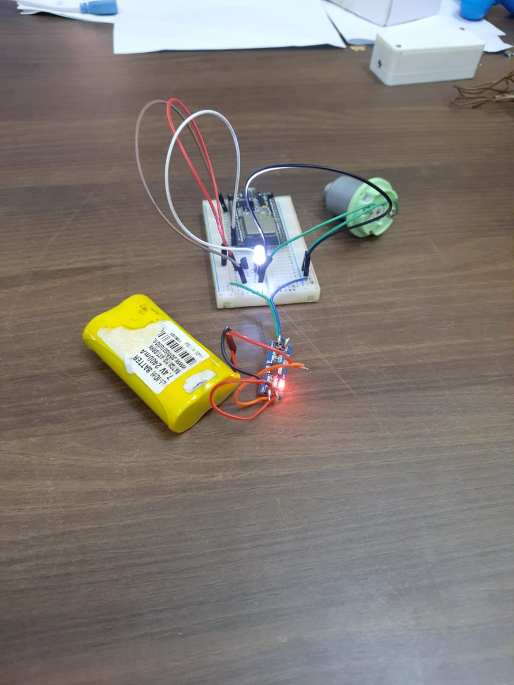
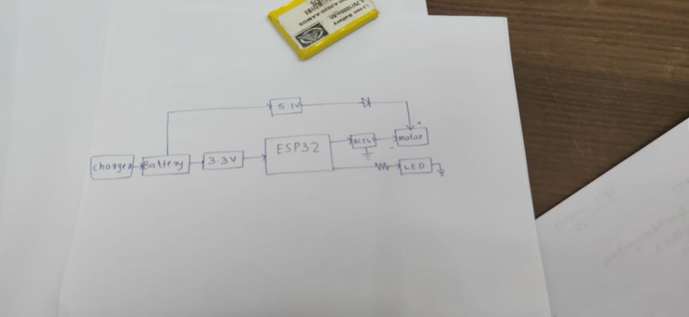

Week 1
Project Description-Altert Device
Alerting devices for a person with sight and hearing difficulties will let them know what is happening in the home eg. a caller at the door, activated smoke alarm or alarm clock, telephone ringing etc.
Project Specifications
Device that can be used to alert and call students int the library . Devices need to be portable and be able to alert the students using vibration ans lights.
Components Listed
-
ESP 32
-
transistor 2N2222
-
3.3V regulator
-
Battery
-
Motor
-
Charger
TASK GIVEN :
-
Come up with the circuit diagram for the device
-
set up the circuit on PCB
-
Interfacing with ESP32
ESP 32
ESP32 is a series of low-cost, low-power system on a chip microcontrollers with integrated Wi-Fi and dual-mode Bluetooth. The ESP32 series employs a Tensilica Xtensa LX6 microprocessor in both dual-core and single-core variations and includes built-in antenna switches, RF balun, power amplifier, low-noise receive amplifier, filters, and power-management modules. ESP32 is created and developed by Espressif Systems,
a Shanghai-based Chinese company, and is manufactured by TSMC using their 40 nm process.[2] It is a successor to the ESP8266 microcontroller.
1 : Circuit Diagram
The first task was to draw the circuit according to the specifications.The motor is programmed using ESP32.ESP32 is powered by regulated
voltage of 3.3 V.The transistor used in 2N2222 . The first draft of the circuit had some mistakes .Afterwards the circuit was modified by Amith sir.
The final version of ciruit diagram is as shown above.
2. Circuit Design on PCB
The next task was to assemble the circuit on PCB according to the circuit diagram .A battery of 7.4 Voltage ws connected to regulator
to obtain 3.3 V and 5.1 V .The 5.1 V to diode IN007 ans 3.3 V to the ESP32 .The motor was programmed by ESP 32 and using transistor.
3. Programming ESP32
The third task was to program the ESP32 .The code was written on arduino IDE and uploaded to the microcontroller .
he DC motor requires a big jump in current to move, so the motors should be powered using an external power source from the ESP32.
/*********
Rui Santos
Complete project details at https://randomnerdtutorials.com
*********/
// Motor A
int motor1Pin1 = 27;
int motor1Pin2 = 26;
int enable1Pin = 14;
// Setting PWM properties
const int freq = 30000;
const int pwmChannel = 0;
const int resolution = 8;
int dutyCycle = 200;
void setup() {
// sets the pins as outputs:
pinMode(motor1Pin1, OUTPUT);
pinMode(motor1Pin2, OUTPUT);
pinMode(enable1Pin, OUTPUT);
// configure LED PWM functionalitites
ledcSetup(pwmChannel, freq, resolution);
// attach the channel to the GPIO to be controlled
ledcAttachPin(enable1Pin, pwmChannel);
Serial.begin(115200);
// testing
Serial.print("Testing DC Motor...");
}
void loop() {
// Move the DC motor forward at maximum speed
Serial.println("Moving Forward");
digitalWrite(motor1Pin1, LOW);
digitalWrite(motor1Pin2, HIGH);
delay(2000);
// Stop the DC motor
Serial.println("Motor stopped");
digitalWrite(motor1Pin1, LOW);
digitalWrite(motor1Pin2, LOW);
delay(1000);
// Move DC motor backwards at maximum speed
Serial.println("Moving Backwards");
digitalWrite(motor1Pin1, HIGH);
digitalWrite(motor1Pin2, LOW);
delay(2000);
// Stop the DC motor
Serial.println("Motor stopped");
digitalWrite(motor1Pin1, LOW);
digitalWrite(motor1Pin2, LOW);
delay(1000);
// Move DC motor forward with increasing speed
digitalWrite(motor1Pin1, HIGH);
digitalWrite(motor1Pin2, LOW);
while (dutyCycle <= 255){
ledcWrite(pwmChannel, dutyCycle);
Serial.print("Forward with duty cycle: ");
Serial.println(dutyCycle);
dutyCycle = dutyCycle + 5;
delay(500);
}
dutyCycle = 200;
}
4. Testing with Blynk application
The setup was tested using an interface created on Blynk. The application activates the alert device at a preset time
for a preset duration .
404 : iamge n code need to be uploaded .
Images



